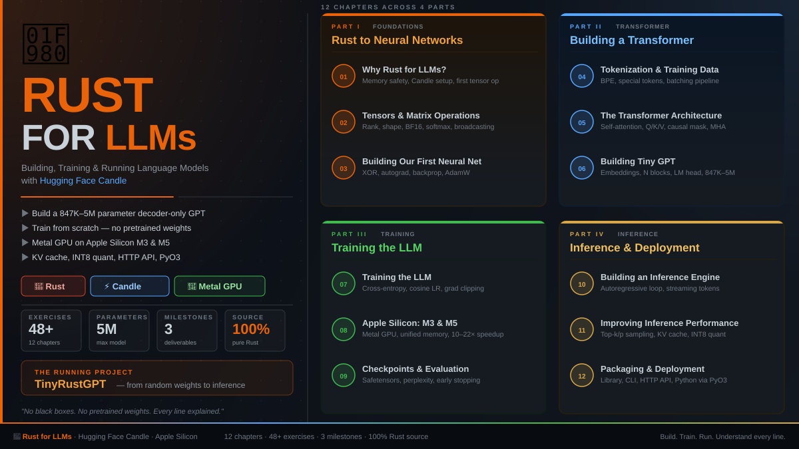

Build, train, and run a GPT-style language model entirely from scratch. No pretrained weights. No black boxes. Every line of code is Rust — and every line is explained.

12 chapters across 4 parts — from Rust fundamentals to deploying TinyRustGPT as a library, CLI, HTTP API, and Python module
The Core Argument
Most LLM tooling is written in Python — fast to prototype, slow at runtime, and opaque about what's really happening. Rust gives you the same performance as C++, the safety guarantees of a proof assistant, and a modern type system that makes ML code readable and correct. Here's why it matters.
candle run at the same throughput as hand-tuned C++
without undefined behavior. Zero-cost abstractions mean Tensor::matmul
has no runtime overhead beyond the actual computation.
let attn = q.matmul(&k.t()?)?;, you know the tensor lifetimes are correct
before you ever run a single training step.
axum all compose safely.
cargo build --release and ship one executable.
No Python runtime, no CUDA toolkit install, no pip install dependency chain.
Your model server runs on a Mac mini, an EC2 instance, or a Raspberry Pi.
The .safetensors weights file and the binary — that's the whole deployment.
torch.compile
flags, no hidden autograd graph. You can read and audit every transformation
the model performs. No black boxes.
candle framework, the tokenizers crate,
safetensors, axum HTTP server, and pyo3 Python bindings
give you everything needed for a production LLM stack — all with first-class Rust APIs
and no Python interop required.
The Running Project
Every chapter contributes to one coherent project — a decoder-only GPT-style transformer built entirely in Rust. By Chapter 12 you have a trained model with a CLI, an HTTP inference API, and Python bindings.
A decoder-only transformer trained from random weights on plain text. Two configurations ship with the book: tiny (128 d_model, 4 heads, 4 layers, ~847K params) for fast iteration, and small (256 d_model, 8 heads, 6 layers, ~5M params) for quality experiments.
fn forward(&self, x: &Tensor) -> Result<Tensor> { let (b, t) = x.dims2()?; let pos = Tensor::arange(0u32, t as u32, x.device()?)? .unsqueeze(0)?.expand((b, t))?; let mut h = (self.tok_emb.forward(x)? + self.pos_emb.forward(&pos)?)?; for block in &self.blocks { h = block.forward(&h)?; } self.lm_head.forward(&self.ln_f.forward(&h)?) }
Table of Contents
Each part builds on the last. By the end of Part IV you have a working, deployed LLM — not a toy script, but a Cargo workspace with a library crate, CLI, HTTP API, and Python bindings.
By The Numbers
Chapter 8 benchmarks Metal vs. CPU for training, and Chapter 11 stacks optimizations to reach production-grade inference throughput on a MacBook Pro.
Start with Chapter 1 — no ML background required, just a working Rust toolchain and curiosity about how language models actually work under the hood.